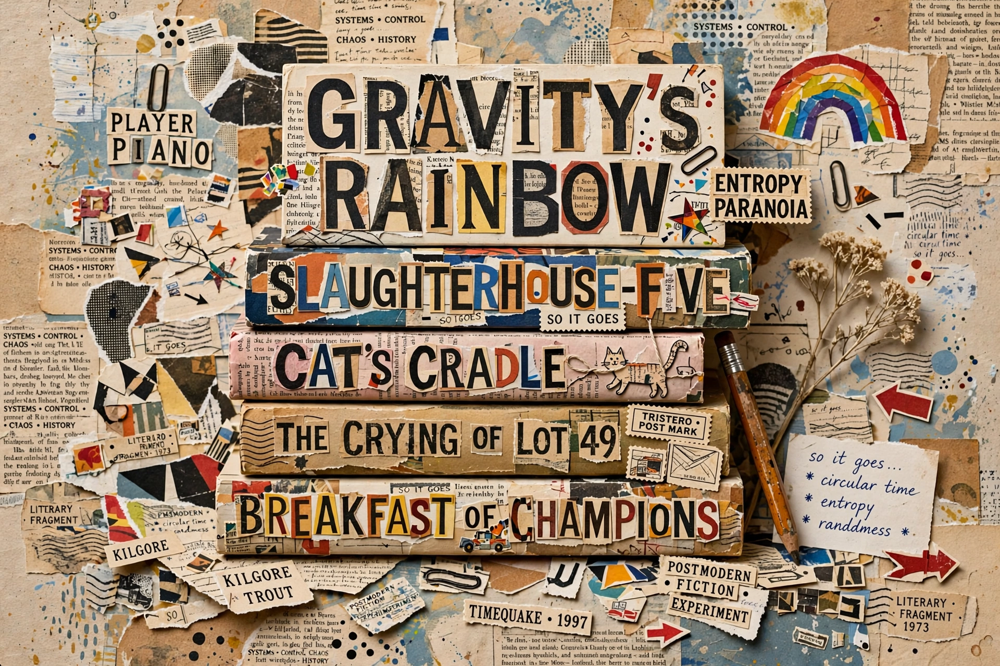

Postmodern literature is a form of literature that is characterised by the use of metafiction, unreliable narration, self-reflexivity, intertextuality, and which often thematises both historical and political issues. This style of experimental literature emerged strongly in the United States in the 1960s through the writings of authors such as Kurt Vonnegut, Thomas Pynchon, William Gaddis, Philip K. Dick and Don DeLillo. Postmodern works are seen as a response against the dogmatic following of Modernist ideas as well as a response against the enlightenment ideas implicitly accepted by Modernist literature.

Many postmodern authors treat serious subjects with humour and irony. The black humour of writers like Joseph Heller (Catch-22) and Kurt Vonnegut (Slaughterhouse-Five) is frequently cited as central to the movement.
Postmodern literature frequently borrows from earlier texts, genres, and styles, making the relationship between texts as important as any single text's meaning. Pastiche — combining multiple genres or styles — is a hallmark technique.
Metafictional writing draws attention to its own status as a constructed artefact, undermining the reader's suspension of disbelief. Authors such as John Barth and Italo Calvino used self-reflexive narration to question the relation between fiction and reality.
Postmodern novels often reject tidy plotting in favour of fragmentation, temporal distortion, and digression. Encyclopedic, "maximalist" works such as Pynchon's Gravity's Rainbow and David Foster Wallace's Infinite Jest attempt to contain a whole world of information within a single novel.